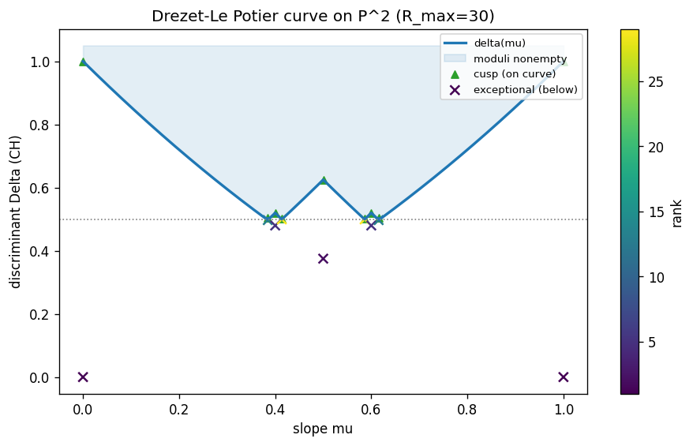
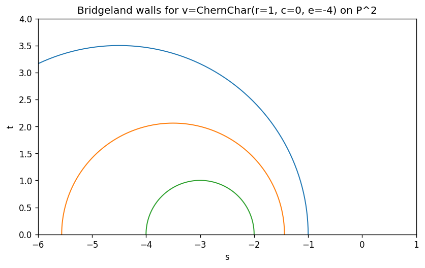
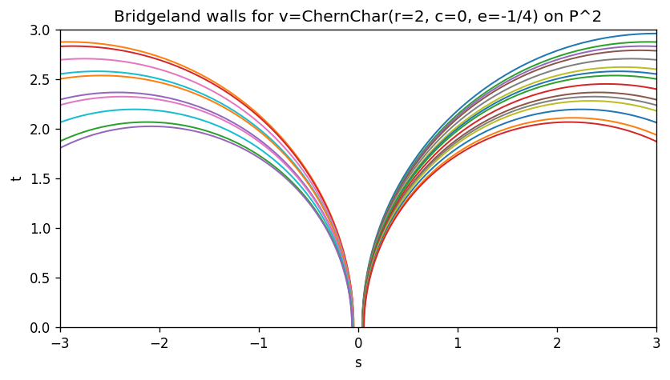
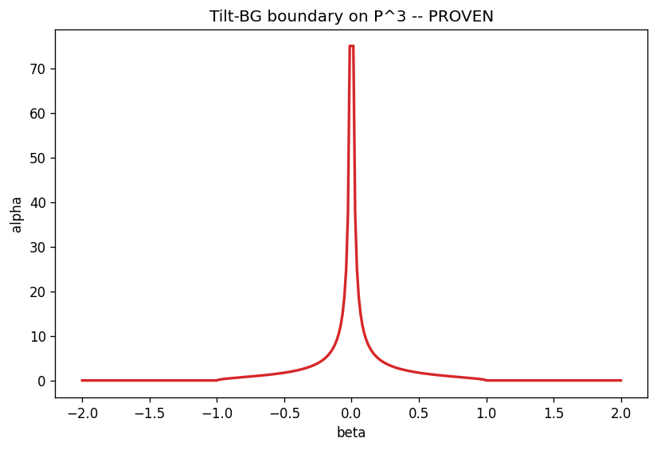

bridgeland_stability — matplotlib backend output (UI/UX review)
Rendered on a dark page so the opaque white figure background is visible. These are the static PNGs the matplotlib path produces today.

1. Drézet–Le Potier curve δ(μ) with rank colorbar

2. Actual Bridgeland walls for P²[4] (nested semicircles)

3. Numerical walls for v=(2,0,−1/4) (capped at 25)

4. Threefold tilt-BG boundary α_crit(β) for P³